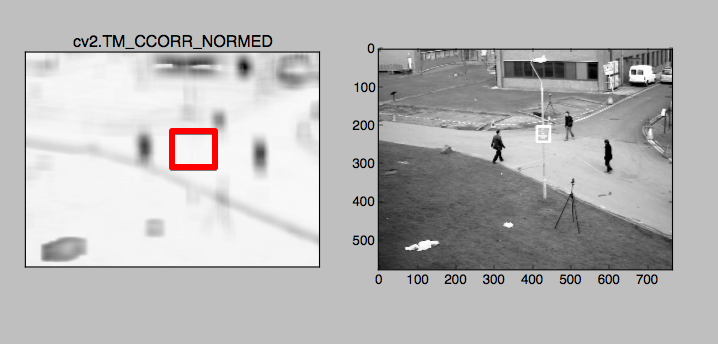

템플릿 매칭¶
Goal¶
- Template Matching을 이용하여 이미지를 찾을 수 있다.
cv2.matchTemplate(),cv2.minMaxLoc()함수에 대해서 알 수 있다
개요 ===
템플릿 매칭은 원본 이미지에서 특정 이미지를 찾는 방법입니다. 이때 사용하는 함수가 cv2.matchTemplate() 함수입니다.
원본 이미지에 템플릿 이미지를 좌측상단 부터 미끄러지듯이 우측으로 이동하면서 계속 비교를 하는 것입니다.
Return되는 값은 Gray 이미지로, 원본의 픽셀이 템플릿 이미지와 유사한 정도를 표현합니다. 이때 강도는 매칭 방법에 따라서 다릅니다.
아래는 매칭 방법에 따라서 결과가 어떻게 나오는지 보여주는 예제입니다.
cv2.TM_SQDIFF , cv2.TM_SQDIFF_NORMED 은 가장 어두운 곳이 매칭지점이고, 나머지는 가장 밝은 곳이 매칭 지정이 됩니다.
Sample Code
1 2 3 4 5 6 7 8 9 10 11 12 13 14 15 16 17 18 19 20 21 22 23 24 25 26 27 28 29 30 31 32 33 34 | #-*-coding:utf-8-*-
import cv2
import numpy as np
from matplotlib import pyplot as plt
img = cv2.imread('images/capture 0.png',0)
img2 = img.copy()
template = cv2.imread('images/cap_template.png',0)
# template 이미지의 가로/세로
w,h = template.shape[::-1]
# Template Match Method
methods = ['cv2.TM_CCOEFF','cv2.TM_CCOEFF_NORMED','cv2.TM_CCORR','cv2.TM_CCORR_NORMED','cv2.TM_SQDIFF','cv2.TM_SQDIFF_NORMED']
for meth in methods:
img = img2.copy()
method = eval(meth)
res = cv2.matchTemplate(img,template,method)
min_val,max_val,min_loc, max_loc = cv3.minMaxLoc(res)
if method in [cv2.TM_SQDIFF, cv2.TM_SQDIFF_NORMED]:
top_left = min_loc
else:
top_left = max_loc
bottom_right = (top_left[0]+w,top_left[1]+h)
cv2.rectangle(img,top_left,bottom_right,255,5)
plt.subplot(121),plt.title(meth),plt.imshow(res,cmap='gray'),plt.yticks([]),plt.xticks([])
plt.subplot(122),plt.imshow(img,cmap='gray')
plt.show()
|
Result

TM_CCOEFF Method

TM_CCOEFF_NORMED Method

TM_CCORR Method

TM_CCORR_NORMED Method

TM_SQDIFF Method

TM_SQDIFF_NORMED Method
위 결과는 보면 좌측 이미지가 Matching결과 이고, 붉은 상자 부분이 Matching Method에 따라 템플릿 이미지를 찾은 영역입니다.